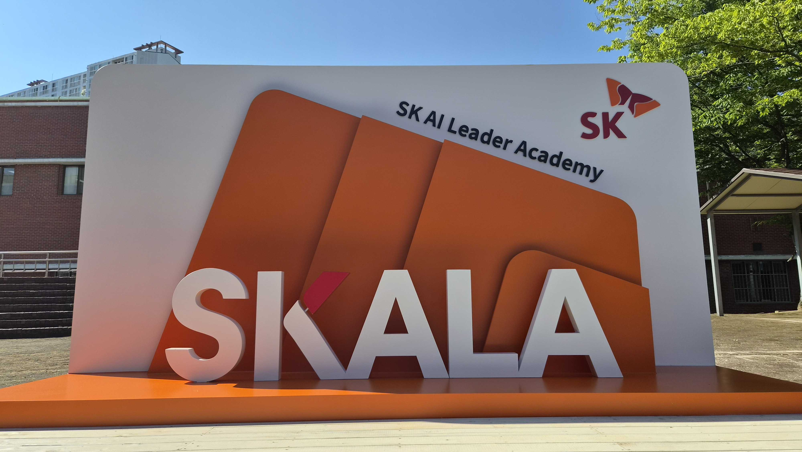
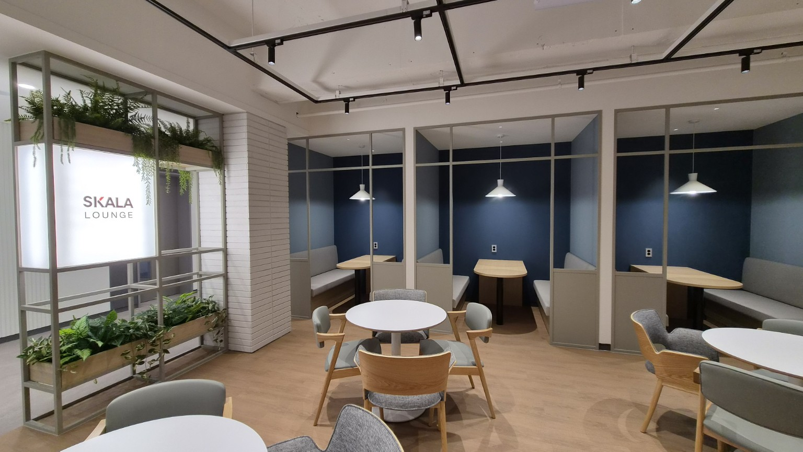
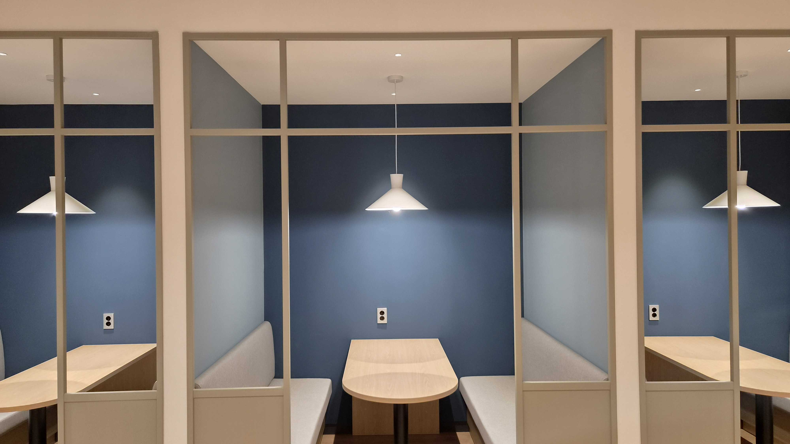
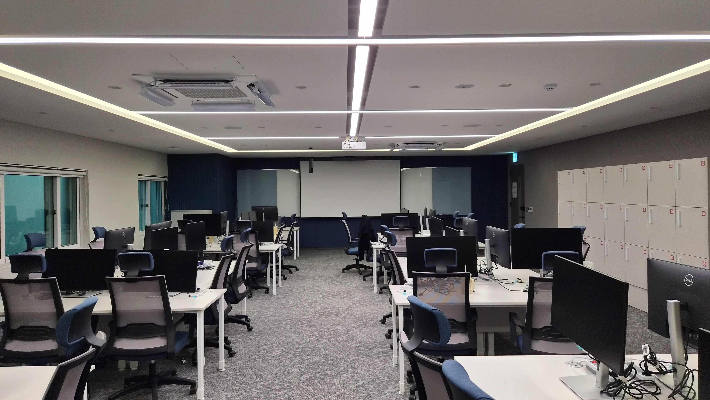

교육관 입구
프롤로그와 입과 장면의 배경으로 사용했습니다.
MEDIA ARCHIVE
이미지, 오디오, 비디오와 대체 텍스트를 사용합니다.

프롤로그와 입과 장면의 배경으로 사용했습니다.

미션을 선택하는 교육관 로비입니다.

Box Model, Flexbox, Grid를 공간과 연결했습니다.

Git 커밋과 AI 협업 기록을 전시합니다.
audio와 source 요소를 사용한 짧은 샘플입니다.
video와 source 요소를 사용한 짧은 샘플입니다.